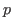

Next: 平均の差に関する推測 Up: JASPについて Previous: データの記述
すでに見たように、相関係数に関してはデフォルトで検定結果が相関行列に記載されている。 [Flag significant correlations] にチェックを入れると、有意なものに 値に応じた米印を付してくれる。 信頼区間は [Confidence intervals] にチェックを入れることで表示されるのであるが、相関行列そのままでは変数が多くなるとサイズも大きくなり見にくくなる。 この場合、[Display pairwise table] にチェックを入れると、下のように変数同士のペアの形式で検定と推定の結果が1行ずつにまとめて表示されるようになる。
Taichi Okumura